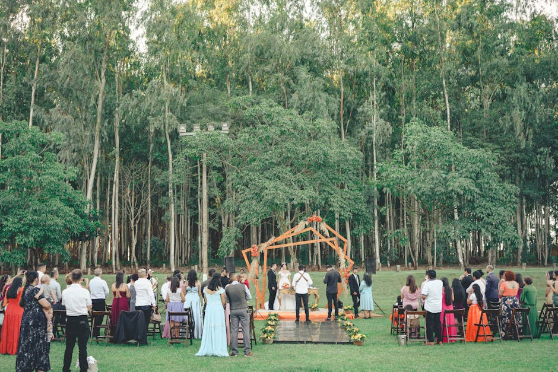
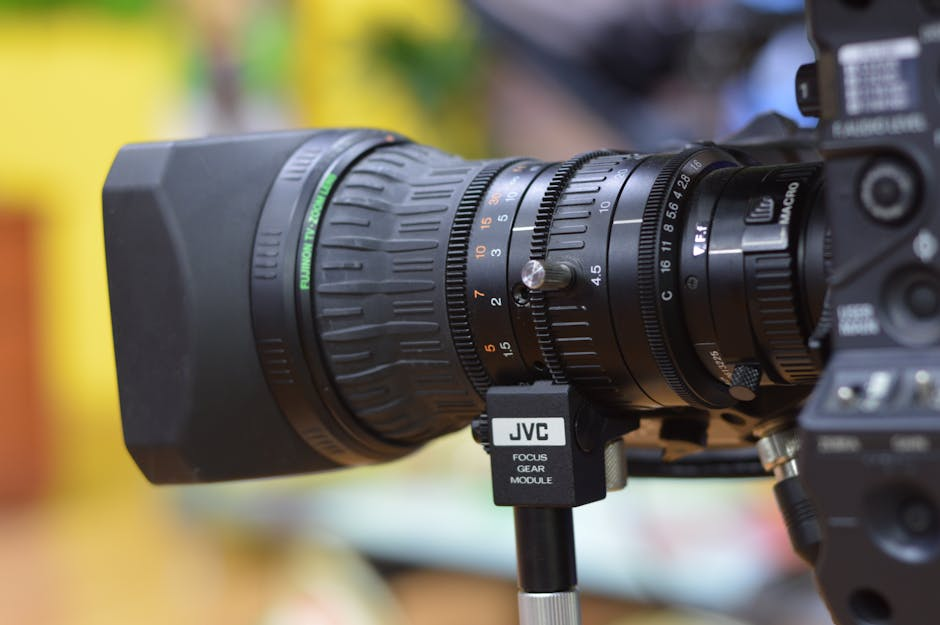
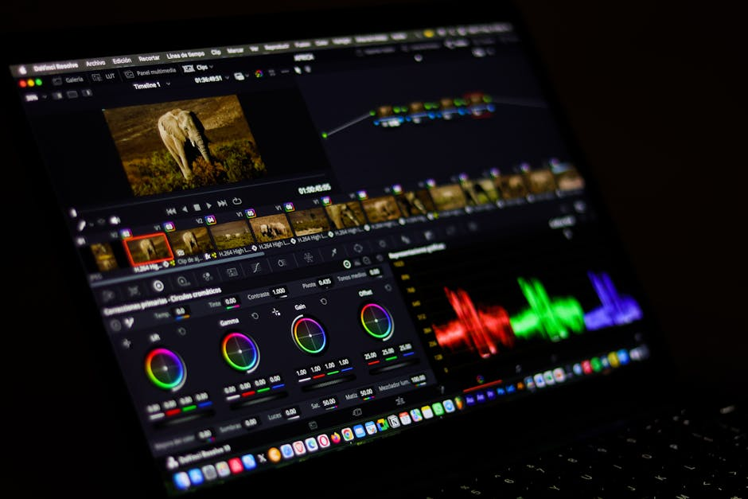
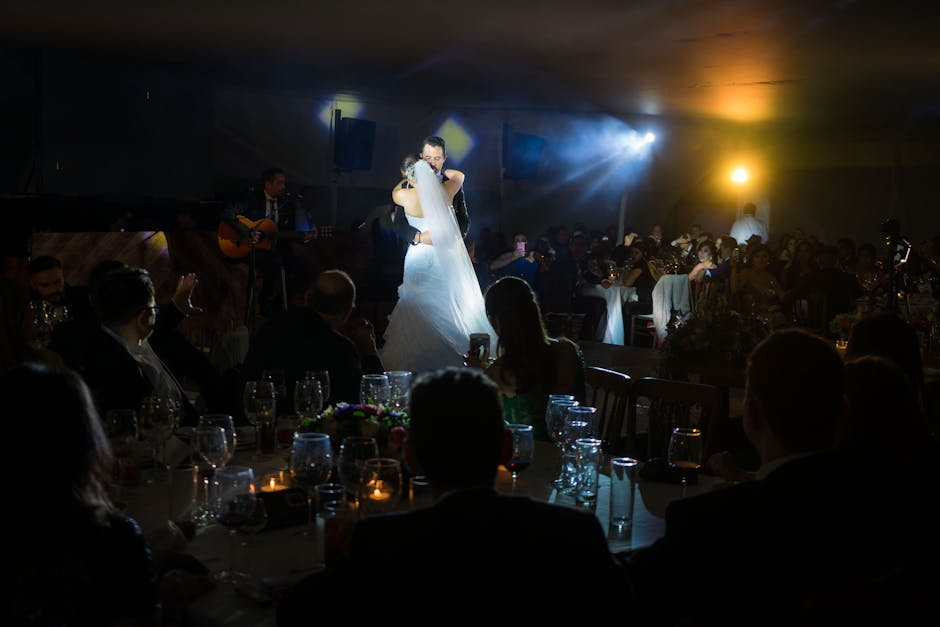

Where Technology Meets Art in Cinematic Wedding Videography.
FreeFD Media is proud to be the promotional partner for Lulan Studio. We connect you with world-class wedding videographers who capture the raw emotion, beauty, and elegance of your most important day in breathtaking detail.


Mastering the Art of the Wedding Film
At FreeFD Media, we believe your special day deserves more than just a recording; it deserves a masterpiece. As an independent promotional operator for Lulan Studio, we help couples discover elite event videography that truly understands the rhythm and soul of a wedding day.
From the quiet, intimate morning preparations to the exuberant grand exit, the focus is always on delivering a cinematic wedding video that allows you to relive every genuine emotion. Our partners utilize state-of-the-art equipment to ensure your memories are preserved with timeless elegance.
Exceptional Videography Services
Curated through our partnership with Lulan Studio, discover the pinnacle of visual storytelling for your milestones.

Cinematic Wedding Video
Experience your wedding day as a beautifully crafted film. Our recommended wedding videographer teams focus on narrative-driven editing, sweeping visuals, and perfect audio capture to tell your unique love story.

Premium Event Videography
Beyond the ceremony, professional event videography ensures that rehearsal dinners, engagements, and grand receptions are documented with the same meticulous attention to detail and cinematic flair.

The Heirloom Wedding Film
Receive a final product that transcends standard video. A true heirloom wedding film blends music, heartfelt speeches, and candid moments into a timeless piece of family history you will cherish forever.
Stories of Love, Beautifully Told
Hear from couples who trusted our partner studio to capture their most precious moments.
"Finding a wedding videographer through FreeFD Media's recommendation was the best decision we made. The cinematic wedding video we received from Lulan Studio felt like a Hollywood movie of our love story."
— Sarah & James, 2026
"The event videography team was completely unobtrusive yet managed to capture every single laugh and tear. Our wedding film is our most treasured possession."
— Michael & David, 2026
"I didn't think I needed a wedding video until I saw Lulan Studio's portfolio featured here. The final edit blew us away—it’s pure art. Highly recommend!"
— Emily & Robert, 2026
Frequently Asked Questions
What makes a cinematic wedding video different from standard videography? ▼
A cinematic wedding video goes beyond merely documenting events. It utilizes advanced filmmaking techniques, creative framing, high-quality audio design, and narrative-driven editing to tell the emotional story of your day, resulting in a wedding film that feels like a beautifully directed movie.
Do you offer event videography for pre-wedding celebrations? ▼
Yes, through our partner Lulan Studio, comprehensive event videography services are available. This can include coverage for rehearsal dinners, welcome parties, and post-wedding brunches to ensure every aspect of your celebration is captured.
How do we secure a wedding videographer through FreeFD Media? ▼
Simply use the inquiry form on this site. FreeFD Media acts as an independent promotional operator. Your inquiry will be seamlessly passed to the team at Lulan Studio, who will directly handle your consultation, booking, and all videography services.
How long does it typically take to receive our final wedding film? ▼
Editing a masterpiece takes time and meticulous care. Generally, couples receive their fully edited, cinematic wedding video within 8 to 12 weeks after the event, though exact timelines are established in your direct agreement with the studio.
Will the videographer travel for a destination wedding? ▼
Absolutely. The wedding videography teams at Lulan Studio are highly experienced in destination weddings and are available to travel worldwide to capture your unforgettable moments in stunning locations.
Begin Your Story
Ready to preserve your memories in a breathtaking cinematic wedding video? Fill out the form, and our partner Lulan Studio will be in touch to discuss availability, packages, and how they can best capture your unique celebration.
Service Provider
Lulan Studio
Available Worldwide